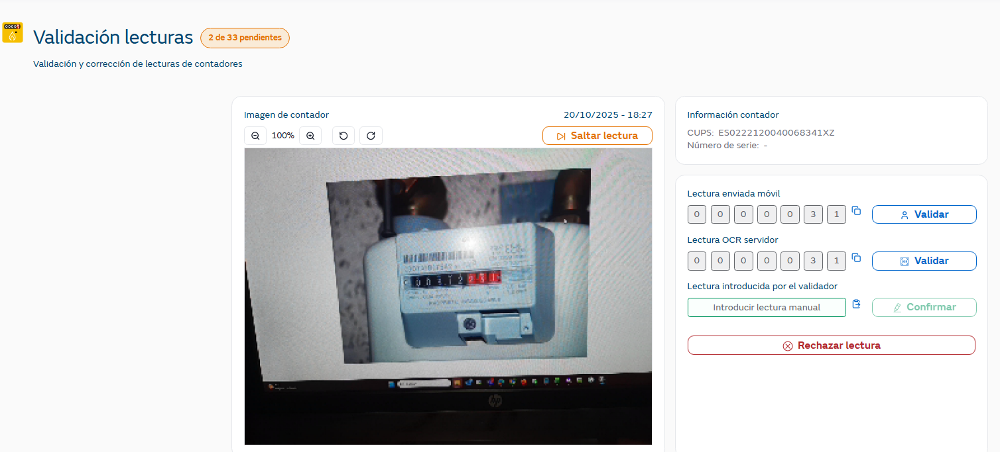

Una vez dentro de la aplicación, accediendo a la opción de 'Validación de Lecturas' el usuario puede consultar todas las lecturas que están pendientes de validar ( son aquellas que en la entidad IMAGE el campo image_status_stage tiene el valor PENDING_MANUAL_PROCESSING) por los siguientes motivos:
la imagen recibida del móvil ha sido rechazada por el OCR del servidor
la imagen ya ha pasado por el sistema alguna vez (bien manual o automáticamente) y al llegar a Zeus, ha sido rechazada. En este caso se mostrará el error que el sistema ha devuelto, y se permitirá al usuario de la aplicación modificar la lectura. En caso que acabe modificando la lectura, se volvería a encolar para enviarse de nuevo.
Al entrar en la pantalla se muestra un número con la cantidad de lecturas pendientes de validar y la lectura pendiente de validar más antigua que hay en el sistema,
Además, hay que tener en cuenta el rol del usuario:
Validador → verá todas las lecturas pendientes de validar y no tienen la marca de supervisión (de la entidad IMAGE campo image_manual_supervision=0)
Manager → verá solo las lecturas pendientes de validar con la marca de supervisión (de la entidad IMAGE campo image_manual_supervision=1)
Administrador → verá todas las lecturas pendientes de validar, independientemente de si están marcadas para supervisión o no

Para cada lectura pendiente de validar se muestra:
Fecha en la que se ha realizado la fotografía
Botones para ampliar y/o girar la fotografía
La imagen de la lectura realizada por el cliente
Si la imagen ha sido enviada para supervisión, se mostrará un mensaje indicándolo bajo la imagen que solo lo verán los usuarios con rol Administrador o Manager
CUPS identificador del punto de suministro
Número de serie del contador
Lectura enviada móvil: lectura reconocida por el OCR en el dispositivo. Si el cliente ha editado la lectura antes de enviarla, se mostrará el texto “Editada por usuario” para que el usuario tenga esta información
También se muestra una opción de copiar el valor en el campo de lectura manual para facilitar su edición en caso necesario.
Botón “Validar” lectura enviada móvil → el usuario al pulsarlo está dando como correcta la lectura que se muestra en “lectura enviada móvil”, si ha visto que coincide con la imagen que se está visualizando a la izquierda
Lectura OCR Servidor: lectura reconocida por el OCR en el servidor
También se muestra una opción de copiar el valor en el campo de lectura manual para facilitar su edición en caso necesario.
Botón “Validar” lectura OCR servidor → el usuario al pulsarlo está dando como correcta la lectura que se muestra en “lectura OCR servidor” , si ha visto que coincide con la imagen que se está visualizando a la izquierda
Lectura manual → por defecto, no hay nada informado en este campo. El usuario puede poner la lectura manualmente o copiar el valor de la lectura móvil o lectura OCR con la opción de copiar que se facilita
Botón “Confirmar → permite al usuario enviar la lectura manual introducida
Botón “Rechazar lectura” → permite al usuario rechazar la lectura en caso que la lectura no sea identificable
De la entidad IMAGE se actualiza image_status_stage → pasa a tener el valor DISCARDED
Si se ha rechazado la lectura y el cliente la consulta en la app, la verá con estado “Descartada”.
Botón “Saltar lectura” → si la lectura que se presenta no la quiere validar el usuario, puede saltar a la siguiente pendiente pulsando este botón
Botón “Enviar a Supervisión” → únicamente aparecerá a usuarios con rol Validador y si se pulsa, la lectura solamente la verán los usuarios con rol Manager. Cuando se les muestre a los usuarios Administradores, se les destacará que son unas imágenes que han sido saltadas para supervisión.
En la entidad IMAGE el campo image_manual_supervision queda informado con valor 1.
Cuando el usuario valida la lectura o la confirma, la lectura pasa a ser enviada a la distribuidora y de la entidad IMAGE se actualiza lo siguiente:
image_status_stage → pasa a tener el valor PENDING_SGC_PROCESSING
image_date_processed_manual: fecha en la que ha validado manualmente la lectura
image_meter_reading_value_manual: valor de la lectura que se ha dado cuando se ha validado manualmente
user_id: usuario que ha validado manualmente la lectura